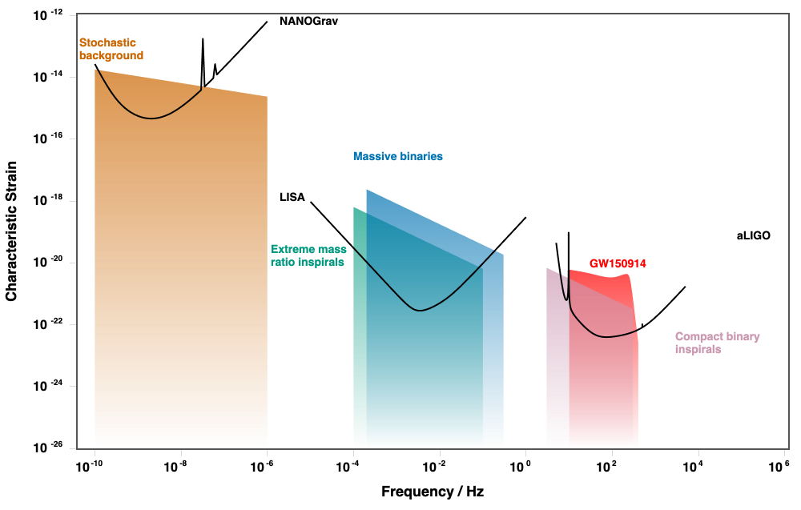
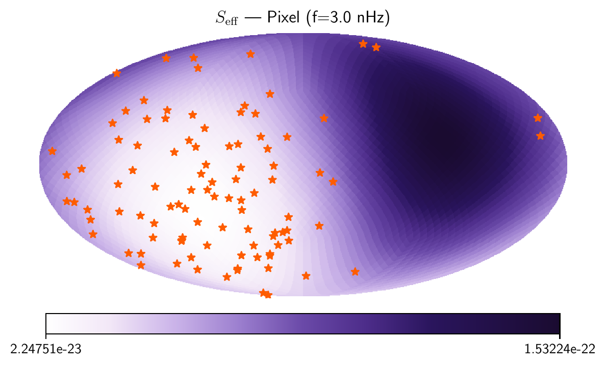
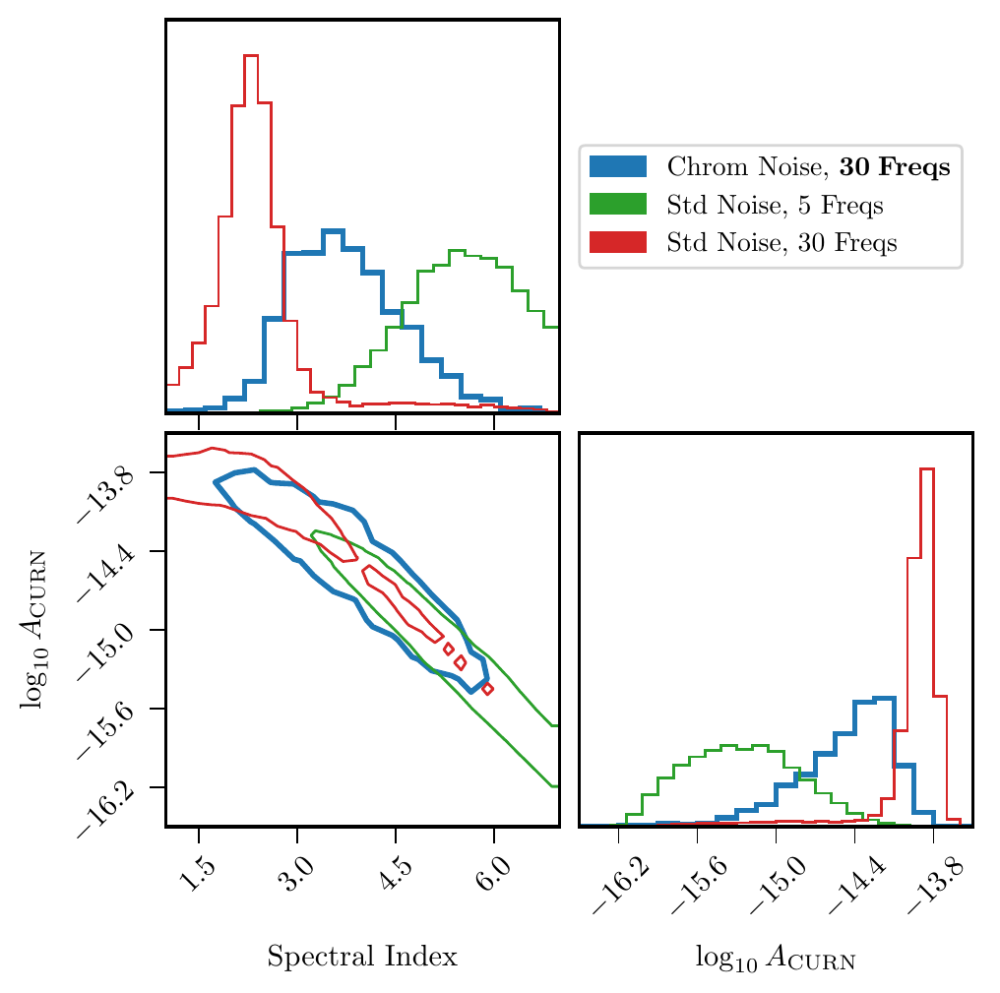
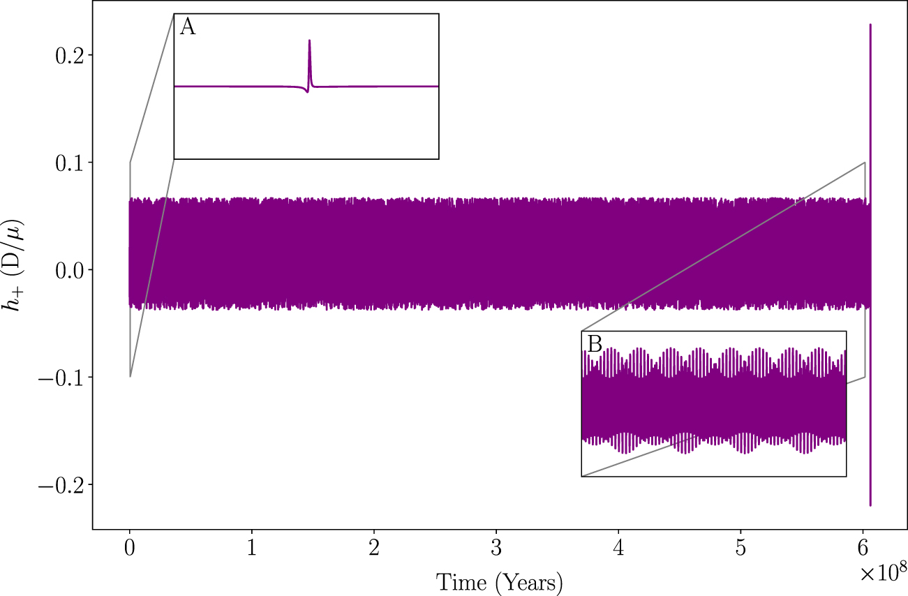
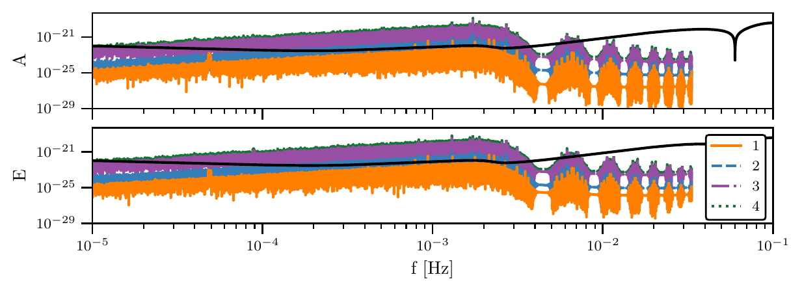

The Gravitational Wave Spectrum
My research spans two complementary regions of the gravitational wave spectrum: the nanohertz
band where pulsar timing arrays like NANOGrav operate, and the millihertz band that the
upcoming space-based observatory LISA will probe. Click on a detector below to jump to the
related research section.

Sensitivity curves for current and proposed gravitational wave detectors. Adapted from GWPlotter (Jeremy Baier branch); original from GWPlotter (Main branch).
PTA Anisotropic Sensitivity
Pulsar timing arrays (PTAs) detect gravitational waves at nanohertz frequencies
(10-10–10-7 Hz) by monitoring tiny variations in the arrival
times of pulses from millisecond pulsars. With strong evidence now in hand for a
stochastic gravitational wave background, most likely sourced by inspiraling
supermassive black hole binaries, one of the next big questions is how that
background is distributed across the sky. A non-uniform population of binaries should
imprint anisotropy on the background, and detecting it would be a strong hint of the
underlying astrophysics.
My current main thrust is developing an analytical framework for the sensitivity of a
PTA to anisotropic backgrounds, pulsar-by-pulsar, direction-by-direction. The
figure below shows an effective sensitivity skymap Seff for a simulated
array; the array is, as expected, most sensitive where pulsars are concentrated. The
forthcoming paper will describe the formalism in full.

Effective sensitivity Seff for a simulated pulsar timing array, plotted across the sky. Sensitivity is best where pulsars are clustered.
PTA Customized Chromatic Noise
The frequency-dependent (chromatic) delays imprinted on pulse arrival times by the
interstellar and interplanetary medium can be up to two orders of magnitude louder
than the gravitational wave background itself. How those delays are modeled directly
affects the inferred spectrum of the background, so getting the noise models right is
essential. I work on building customized chromatic noise models for each pulsar in
NANOGrav’s datasets, testing the significance of competing noise prescriptions
on a per-pulsar basis.

Figure 10 from Hazboun, Simon, Larsen, Baier, Oliver, et al. (2026): comparison of customized chromatic noise modeling (blue) against the standard noise approach at 5 (green) and 30 (red) frequencies. The chromatic models bring the recovered gravitational wave background results more in line with the common process.
LISA EMRIs and the Gravitational Wave Peep
LISA, the planned space-based gravitational wave detector, will be sensitive between
roughly 10-5 and 10-1 Hz. A prime LISA source is the extreme
mass ratio inspiral (EMRI): a stellar-mass compact object (~10 M☉)
spiraling into a massive black hole (105–108
M☉) at the center of a galaxy. These orbits typically start out
highly eccentric and only emit detectable radiation in brief bursts as the compact
object swings past periapsis.
Each one of these bursts is a gravitational wave “peep” —
firmly in the LISA band even when the long-period orbit itself is not. A single peep
is unlikely to be individually resolvable, but a cosmological population of them out
to redshift z = 3 contributes to LISA’s signal confusion noise. My dissertation
and follow-up work focuses on modeling that background and quantifying how much it
can obscure otherwise-detectable LISA sources.

A fully modeled EMRI waveform from capture to merger using a numerical kludge code (a = 0.8 M, p = 119.999916 M, e = 0.9999981). Repeated bursts at periapsis give rise to the gravitational wave peep. From Oliver et al. (2024).

Stochastic background from gravitational wave peeps under three different population assumptions, plotted against the LISA A and E channel sensitivity curves. From Oliver et al. (2026).